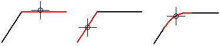
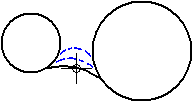
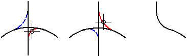
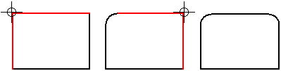
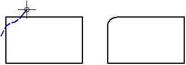
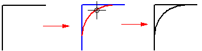

Draw a fillet

-
Choose the Fillet command .
-
On the Fillet command bar, type a radius in the Radius box.
-
Click one of the elements that you want to draw the fillet between. You can draw a fillet between arcs, lines, circles, ellipses, and curves.
-
Click the other element.
-
Click to draw the fillet.
-
You can draw a fillet without typing a radius. Click the two elements you want to use, move the cursor to a position that defines the radius, then click.

-
When the elements you want to use cross each other, you can draw a fillet at any of the quadrants. The software trims the remaining elements at the end points of the fillet.

-
You can draw a fillet at a corner with one click. On the command bar, type a value in the Radius box. Position the mouse cursor over a corner, then click.
The value in the Radius box is active until you change it, so you can click one corner after another to draw fillets with the same radius.

-
You can draw a fillet by dragging the cursor over the two elements that you want to draw the fillet between. When you use this method, the Radius box on the command bar is not active.

-
You can draw a fillet without trimming the two elements that you are drawing the fillet between. On the command bar, click the No Trim button before clicking the first element.
